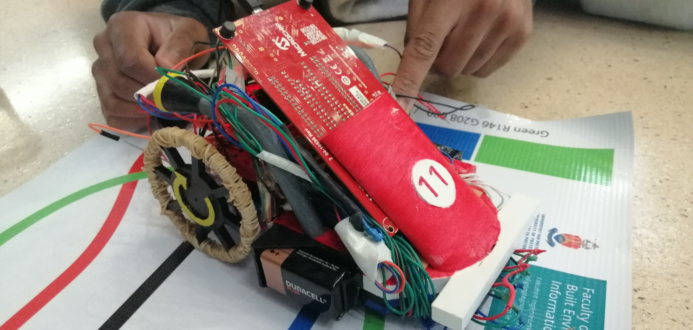
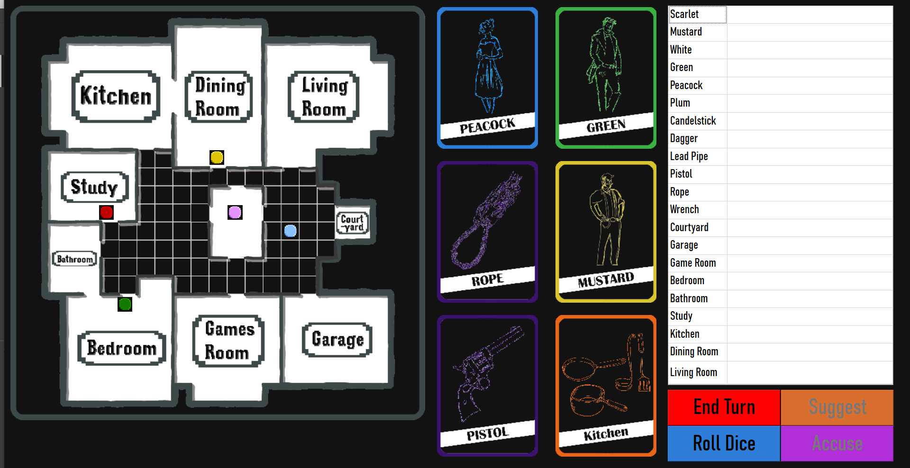
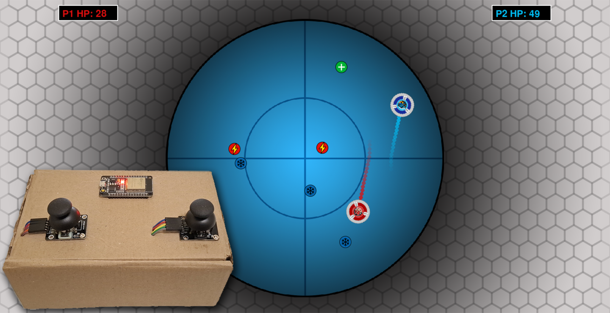
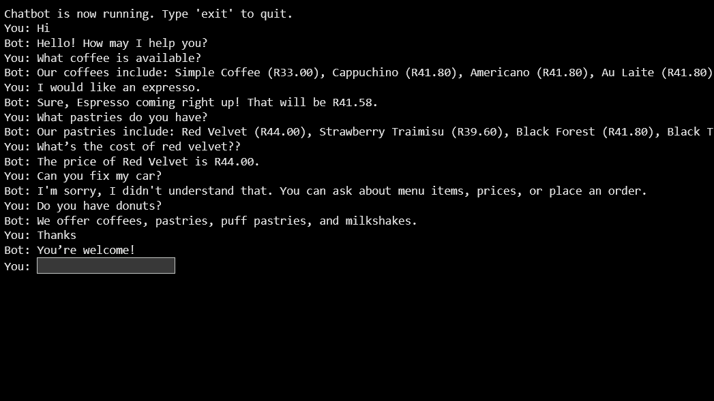
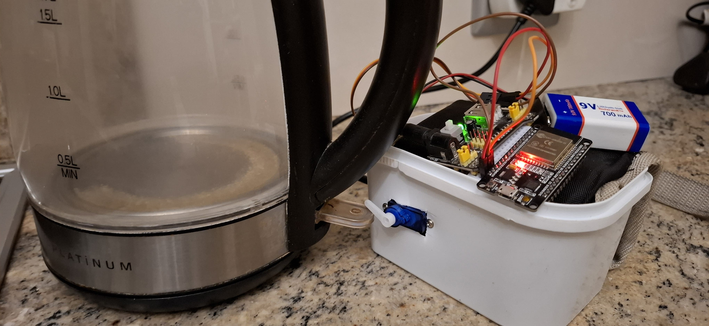
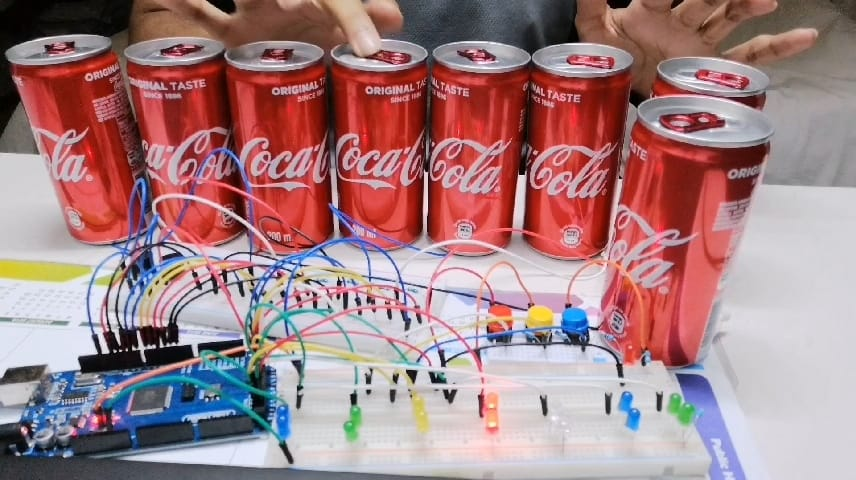
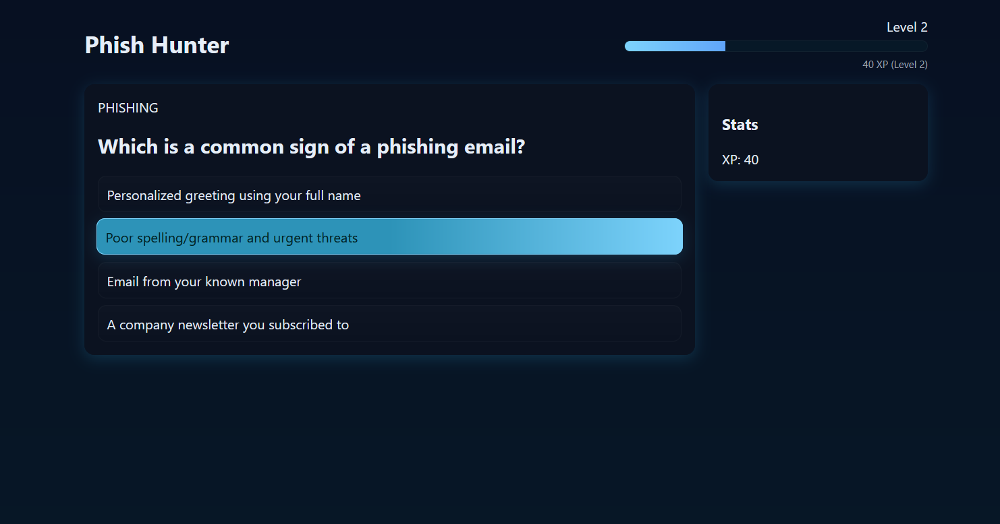
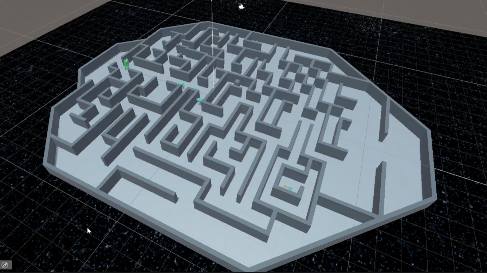

I'm a passionate Software Engineer at Entelect with a background spanning Computer Engineering and Computer Science.
I love solving problems, building meaningful (and sometimes just fun) projects, and constantly learning new skills.
With experience in both low-level systems and high-level design, I've worked on everything from microcontroller robots to AI-powered assistants and my own Android app.
I thrive in positive, collaborative environments and enjoy stepping up to lead when coordinating teams. Whether it's building trivia games,
automating timetables, or hacking together hardware projects, I enjoy bringing ideas to life with clean code and thoughtful design.
I believe having a well-rounded life sharpens creative problem-solving — pursuing a variety of interests helps
me approach challenges with broader perspectives and more adaptable thinking.
Hobbies & Interests
Outside of work, I’m someone who stays active and creative. I enjoy hiking, gym, crocheting, longboarding, cooking and reading. I’ve also dabbled in making short films, and I love robotics and
tech side-projects that mix creativity with engineering. I believe that these passions not only keep life exciting but also fuel
my innovation and resilience in tech and problem solving.
Achievements
Founder and Head of Tuks Anime Society (2023) - Largest Society at the University of Pretoria with near 700 members
Completed my first full 42.2Km Marathon (2025)
200+ Leetcode Submissions
Participated in Numerous Hackathons - Placed 11/184 in the April 2025 Entelect Challenge University Cup
Head of of High School Newspaper
Work Experience
Entelect
Software Engineer
Johannesburg, SA 2026 – Present
Current Placement
Standard Bank – BOL+ Team
Placed at Standard Bank working on the Business Online Plus (BOL+) platform — Standard Bank's flagship digital banking solution for business clients. Contributing to feature development, maintenance, and improvement of the platform in a professional enterprise environment.
My Toolbox
Python
Java
C++
HTML
CSS
MySQL
Micro-Controllers
Discrete Circuits
Assembly
Android Studio
XML
LaTeX
GIT
MATLAB
VHDL
Microsoft Word
Microsoft Excel
Microsoft PowerPoint
Adobe Photoshop
3D Printing Design
Projects
UKZN Timetable App
Personal Project
An Android application designed to automatically generate university schedules.
A personal project developed using Java and Android Studio; the app solves a real pain point for UKZN students (including myself) -
eliminating the need to manually build semester timetables. Focused on intuitive UX and smooth UI,
it's currently in the process of being published to the Google Play Store.
Escape the Cinema
UKZN (Advanced Programming)
A narrative-driven trivia game created in C++ and Qt for the COMP315 Advanced Programming module.
I led a team of 7 from concept to completion, acting as team lead. I emphasized design, planning, and following the software development life cycle.
I organized meetings, and assigned homework tasks to familiarize my group members with the software.
I designed our system in a way that ensured that even if group members had different levels of competency,
I ensured everyone felt included, challenged to some degree, and learnt a little bit of everything in the system.
I also designed the modular controller architecture, implemented core game logic including lives, randomized questions,
and level progression, and contributed to the GUI. Our structured approach and execution led to our game receiving the
highest project score in the class.
My Fitness GPT
UKZN (Software Design)
A personalized AI fitness and nutrition assistant powered by PrivateGPT.
The system ingests user data and provides tailored advice, all running locally for privacy.
Developed a landing page and questionnaire system to generate user-specific profiles and health PDFs.
A full-stack fusion of AI, design, and personal passion.

Line following Microcontroller-based Autonomous Robotic Vehicle
UP (Microprocessors)
A microcontroller-based autonomous line-following vehicle developed in assembly for the EMK310 Microprocessors course.
The robot was developed by a team of 4 using assembly on a PIC18. Programmed to navigate a course of colored lines using
a custom-built analog colour sensor.

Digital Cluedo Game
UP (Software Engineering)
A local network multiplayer digital board game based on Cluedo, with optional AI opponents built using C++ and Qt
as part of the EPE321 Software Engineering module. Developed as part of a 6-person team using Agile methodology, GitKraken, and Jira.
I handled GUI design and core logic while contributing to collaborative code and planning.

PyBlade
Personal Project
A two-player arena game developed in Python using Pygame,
inspired by the energy and physics of Beyblade battles.
I designed all game assets in Adobe Photoshop and focused on clean UI and responsive controls.
Players use keyboard inputs (WASD vs. arrow keys) to compete in a physics-driven arena, colliding with each other, dodging
hazards (freeze orbs) and collecting power-ups like speed boosts and healing, in order to be the last one standing.
As an optional extension, I built a custom wireless controller system using an ESP32 and dual
analog joysticks, mounted on a custom cardboard housing. The ESP32 communicates with the game over Wi-Fi
to provide a physical dual-player controller interface.
A fun personal project inspired by my love of beyblades, the game is publicly available on itch.io

Coffee Shop Chatbot
UKZN (Natural Language Processing)
A rule-based chatbot developed in Python using NLP techniques for order-taking,
availability checking, and price queries. Built as a team of 4 for the COMP316 NLP module,
with a focus on usability and intent recognition. It uses regex, fuzzy matching,
and a CSV backend to understand user inputs.

Kettle Clicker
Personal Project
An IoT project that controls a kettle using an ESP32 microcontroller and a servo motor,
integrated with the Blynk app. Features include real-time control through a Wi-Fi enabled mobile phone, scheduled automation, and PWM programming in Arduino C++.
A quirky, personal project born from caffeine dependency and a desire to get out of bed earlier.

Capacitive Touch Coke Can Piano
Personal Project
A fun electronics project using aluminum cans as capacitive touch sensors connected to an Arduino.
Touching each can played a different tone through a buzzer and lights up a coresponding LED. Simple, interactive, and
built to explore touch sensitivity circuits and sound synthesis.

Phish Hunter
Hackathon
A browser-based educational game designed to improve cybersecurity awareness. Through interactive multiple-choice challenges and
scenario-based questions, players learn how to identify threats, strengthen their digital habits, and protect themselves online.
An XP and level progression system was also implemented so players need to pass a certain number of questions in a section to progress
to the next section. Built in 24Hrs as a part of the South African Invervarcity Hackathon 2025

Escape from Alpha 9
UKZN (Graphics & Modelling)
An arcade-style 3D maze game developed in Unity for the COMP307 Graphics and Modelling module.
Built as a group project, the premise has the player abducted by aliens and stranded aboard an alien spaceship —
you must either find the hidden key and escape, or hunt down a ray gun and eliminate every alien to seize control of the ship.
Every asset in the game, from the spaceship corridors to the alien characters, was hand-modelled by the team in Blender,
giving the project a fully original aesthetic from top to bottom.
Academic History
University
University of Pretoria
Pretoria, SA Jan 2020 – Dec 2023 BEng Computer Engineering
Coursework:
Program Design
Software Engineering
Object Oriented Programming
Digital systems
Data Structures and Algorithms
Artificial Intelligence
Digital Communication
Linear systems
Material Science
Electrical Engineering
Computer Simulations
Engineering Management
Professional and Technical Communication
University of KwaZulu-Natal
Pietermaritzburg, SA Jan 2024 – Dec 2025 BSc Computer Science & IT
Coursework:
Cryptography
Computer Architecture
Software Design
Natural Language Processing
Database Systems
Operating Systems
Theory of Computation
Graphics and Modelling
Certificates
CISCO (Dec 2020 – Mar 2023)
CCNA R&S: Introduction to Networks
CCNA R&S: Routing and Switching Essentials
CCNAv7: Switching, Routing, and Wireless Essentials
CCNAv7: Enterprise Networking, Security, and Automation